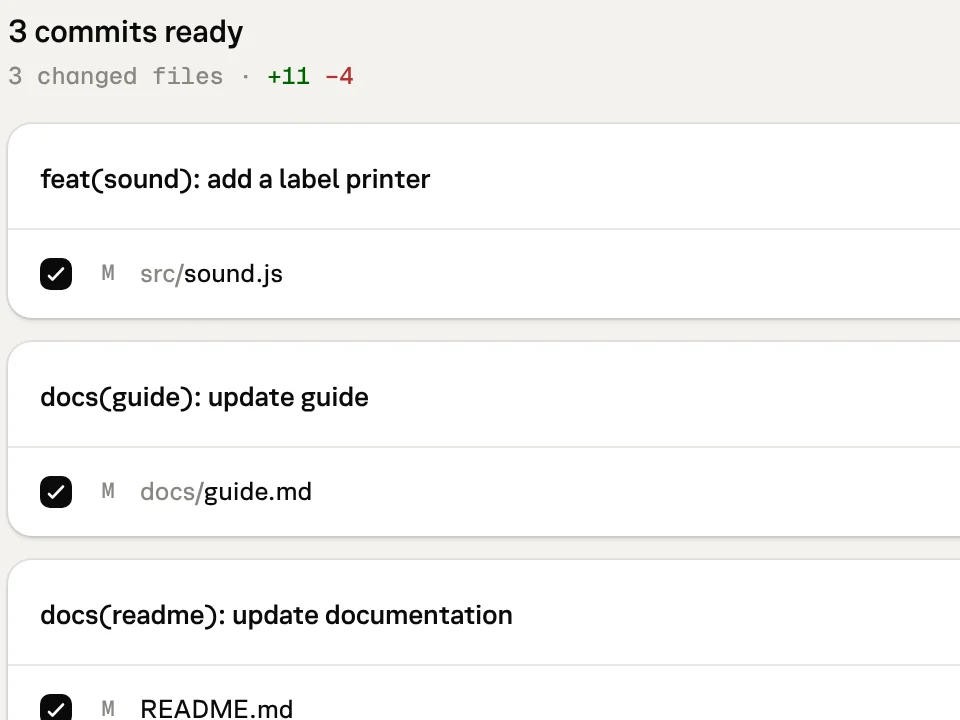
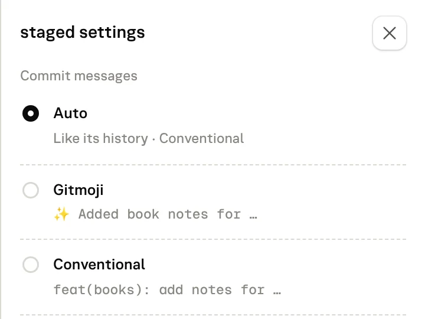
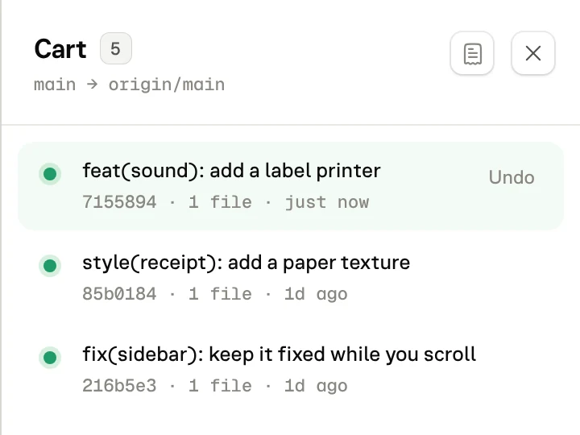
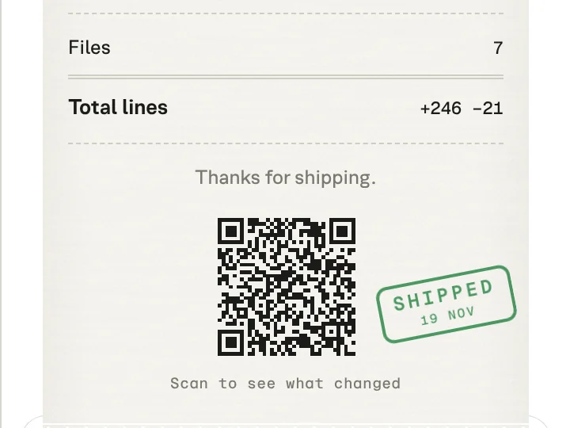
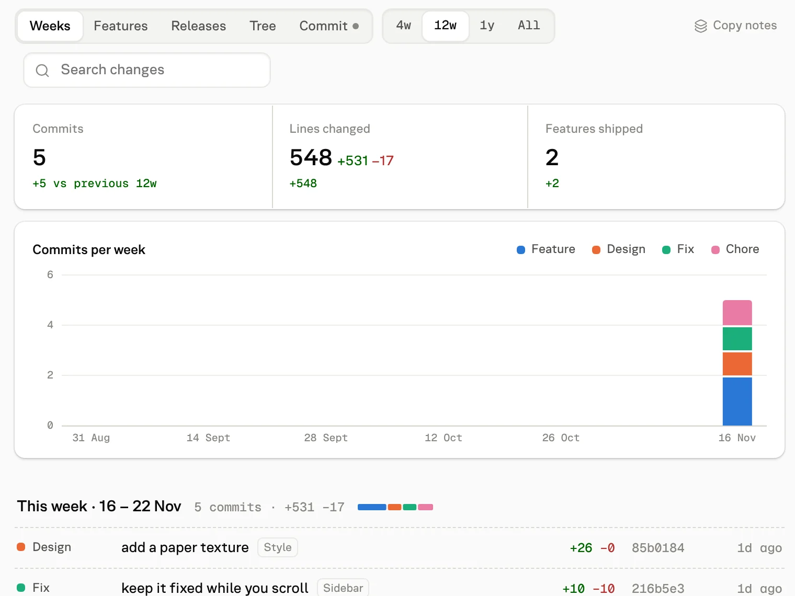
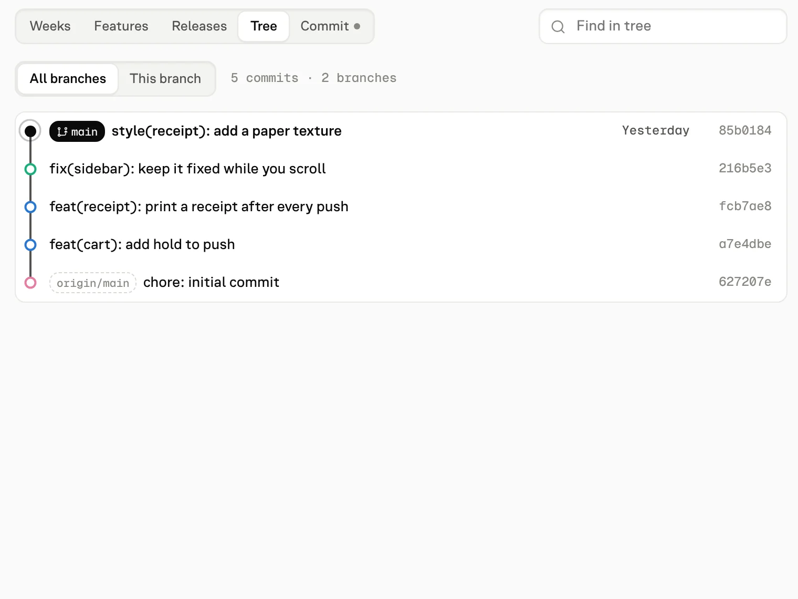

Sorts your changes
A new feature travels with its styles and the lines that hook it in.

Staged sorts the changes on your computer into clean commits and writes the messages. You check them, add them to the cart, and hold to push.
git clone https://github.com/Vyshnav2255/staged.git && cd staged && npm startAdd a commit to the cart, hold to push, and a receipt prints.
You worked on three things at once and now forty files have changed. Staged untangles them, so every commit is one thing with a message that says what it is.
A new feature travels with its styles and the lines that hook it in.

In the style your repo already uses, or the one you pick for it.

Commits wait in the cart until you hold to push. Undo is one click.

Every push ends with a receipt of what went out, ready to save.

Staged follows real imports, names a change adds in one file and uses in another, and the files you usually commit together. When one file holds two features, it splits the file by chunk and gives each commit its own part.
Subjects say what changed for someone using your app: Added a label printer, not Update sound.js. It reads the comments you wrote and the names you added. Auto follows your history, or set Gitmoji, Conventional Commits or both for each project.
Adding a commit to the cart makes it, right there on your branch. The cart shows everything that hasn't been pushed yet, so you can look it over once more. Changed your mind? Undo puts the last one back in your changes.
Pushing is a deliberate hold, never a stray click. Let go early and nothing happens. When it goes through, a receipt prints with the commits, files and lines, and a QR code to see the changes on GitHub.
Weeks, features and releases instead of a wall of hashes, and a tree of every branch and merge.


No account, no server of ours and no model. Staged reads your repos in place and works out the commits on its own, offline and instantly.
Nothing is committed until you add it to the cart, and nothing is pushed until you hold the button. You can change any group or message first.
Discarded changes go to a trash you can restore from, and the last commit has an Undo. Staged's settings live outside your repos.
Yes. There is no paid tier, no trial and no account.
No. Staged is a small app that runs on your computer and reads your repos where they are. Grouping and messages come from its own rules, so there is no AI service, no server of ours and nothing to send anywhere. The only time anything goes out is when you push, and that goes to your own remote.
No. Staged reads the diff itself: real imports, names a change adds and uses, which files you usually commit together, the comments you wrote. That is enough to sort a pile of changes and write subjects like Added a label printer, instantly and offline.
No. It only suggests. A commit is made when you add it to the cart, and nothing reaches your remote until you hold the push button. The last commit has an Undo.
Drag a file onto another commit, or onto Drop here for a new commit. Staged remembers the move and groups those files together next time. A file that holds two features is split by chunk, and you can pick chunks yourself.
Yes, per project. Auto follows the style your repo already uses. You can also pick Gitmoji, Conventional Commits, or both, from the gear next to the repo name.
After every push Staged prints a small receipt of what went out: the commits, files and lines, with a QR code to the changes on GitHub. Save it as an image if you like sharing your work.
Node 18 or newer and git. Clone the repo and run npm start. It opens in your browser at localhost and updates itself when a new release is out.
It finds the folder your repos live in, such as ~/GitHub or ~/Developer, and lists every git repo inside. You can add folders, add single repos, or hide one.
Yes. It works on the git repo on your disk, so the host does not matter. Push goes wherever your remote points.
Delete the folder you cloned. Its own settings live in ~/.config/staged, never in your repos, so delete that too if you want a clean slate.
git clone https://github.com/Vyshnav2255/staged.git && cd staged && npm start